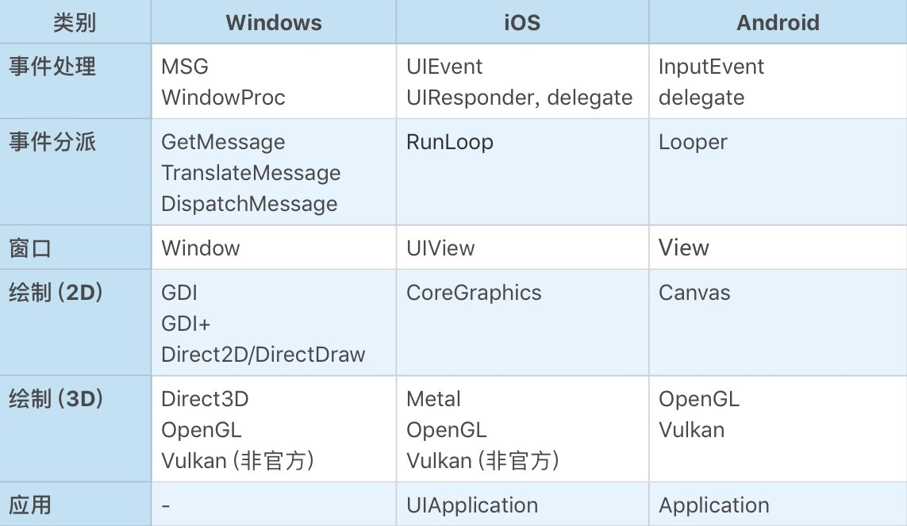

- 00 开篇词 怎样成长为优秀的软件架构师？.md
- 01 架构设计的宏观视角.md
- 02 大厦基石：无生有，有生万物.md
- 03 汇编：编程语言的诞生.md
- 04 编程语言的进化.md
- 05 思考题解读：如何实现可自我迭代的计算机？.md
- 06 操作系统进场.md
- 07 软件运行机制及内存管理.md
- 08 操作系统内核与编程接口.md
- 09 外存管理与文件系统.md
- 10 输入和输出设备：交互的演进.md
- 11 多任务：进程、线程与协程.md
- 12 进程内协同：同步、互斥与通讯.md
- 13 进程间的同步互斥、资源共享与通讯.md
- 14 IP 网络：连接世界的桥梁.md
- 15 可编程的互联网世界.md
- 16 安全管理：数字世界的守护.md
- 17 架构：需求分析 (上).md
- 18 架构：需求分析 (下) · 实战案例.md
- 19 基础平台篇：回顾与总结.md
- 20 桌面开发的宏观视角.md
- 21 图形界面程序的框架.md
- 22 桌面程序的架构建议.md
- 23 Web开发：浏览器、小程序与PWA.md
- 24 跨平台与 Web 开发的建议.md
- 25 桌面开发的未来.md
- 26 实战（一）：怎么设计一个“画图”程序？.md
- 27 实战（二）：怎么设计一个“画图”程序？.md
- 28 实战（三）：怎么设计一个“画图”程序？.md
- 29 实战（四）：怎么设计一个“画图”程序？.md
- 30 实战（五）：怎么设计一个“画图”程序？.md
- 31 辅助界面元素的架构设计.md
- 32 架构：系统的概要设计.md
- 33 桌面开发篇：回顾与总结.md
- 34 服务端开发的宏观视角.md
- 35 流量调度与负载均衡.md
- 36 业务状态与存储中间件.md
- 37 键值存储与数据库.md
- 38 文件系统与对象存储.md
- 39 存储与缓存.md
- 40 服务端的业务架构建议.md
- 41 实战（一）：“画图”程序后端实战.md
- 42 实战（二）：“画图”程序后端实战.md
- 43 实战（三）：“画图”程序后端实战.md
- 44 实战（四）：“画图”程序后端实战.md
- 45 架构：怎么做详细设计？.md
- 46 服务端开发篇：回顾与总结.md
- 47 服务治理的宏观视角.md
- 48 事务与工程：什么是工程师思维？.md
- 49 发布、升级与版本管理.md
- 50 日志、监控与报警.md
- 51 故障域与故障预案.md
- 52 故障排查与根因分析.md
- 53 过载保护与容量规划.md
- 54 业务的可支持性与持续运营.md
- 55 云计算、容器革命与服务端的未来.md
- 56 服务治理篇：回顾与总结.md
- 57 心性：架构师的修炼之道.md
- 58 如何判断架构设计的优劣？.md
- 59 少谈点框架，多谈点业务.md
- 60 架构分解：边界，不断重新审视边界.md
- 61 全局性功能的架构设计.md
- 62 重新认识开闭原则 (OCP).md
- 63 接口设计的准则.md
- 64 不断完善的架构范式.md
- 65 架构范式：文本处理.md
- 66 架构老化与重构.md
- 67 架构思维篇：回顾与总结.md
- 68 软件工程的宏观视角.md
- 69 团队的共识管理.md
- 70 怎么写设计文档？.md
- 71 如何阅读别人的代码？.md
- 72 发布单元与版本管理.md
- 73 软件质量管理：单元测试、持续构建与发布.md
- 74 开源、云服务与外包管理.md
- 75 软件版本迭代的规划.md
- 76 软件工程的未来.md
- 77 软件工程篇：回顾与总结.md
- 加餐 如何做HTTP服务的测试？.md
- 加餐 实战：“画图程序” 的整体架构.md
- 加餐 怎么保障发布的效率与质量？.md
- 热点观察 我看Facebook发币（上）：区块链、比特币与Libra币.md
- 热点观察 我看Facebook发币（下）：深入浅出理解 Libra 币.md
- 用户故事 站在更高的视角看架构.md
- 答疑解惑 想当架构师，我需要成为“全才”吗？.md
- 结束语 放下技术人的身段，用极限思维提升架构能力.md
- 课外阅读 从《孙子兵法》看底层的自然法则.md
21 图形界面程序的框架
你好，我是七牛云许式伟。
上一讲我们回顾了交互的演化历程。今天，我们将关注点收敛到现在仍然占主流地位的图形界面程序。它的结构如下图所示。

实现一个图形界面程序，最大的复杂性在于不同操作系统的使用接口完全不同，差异非常巨大。这给开发一个跨平台的图形界面程序带来巨大挑战。
好在，尽管操作系统的使用接口有异，但基本的大逻辑差不多。今天我们从统一的视角来看待，谈谈图形界面程序的框架。
事件
无论是什么桌面操作系统，每个进程都有一个全局的事件队列（Event Queue）。当我们在键盘上按了一个键、移动或者点击鼠标、触摸屏幕等等，都会产生一个事件（Event），并由操作系统负责将它扔到进程的事件队列。整个过程大体如下。
- 键盘、鼠标、触摸屏等硬件产生了一个硬件中断；
- 操作系统的硬件中断处理程序收到对应的事件（Event）；
- 确定该事件的目标进程；
- 将事件放入目标进程的事件队列（Event Queue）。
窗口与事件响应
窗口（Window），也有人会把它叫视图（View），是一个独立可复用的界面元素（UI Element）。一个窗口响应发送给它的事件（Event），修改内部的状态，然后调用 GDI 绘制子系统更新界面显示。
响应事件的常见机制有两种。
一种是事件处理类（EventHandler，在 iOS 中叫 Responder）。通常，我们自定义的窗口类会直接或间接从事件处理类继承。Windows 平台有些特殊，为了让窗口类可复用，且与语言无关，它将事件处理做成了回调函数，术语叫窗口过程（WindowProc）。这只是形式上的不同，并无本质差异。
另一种是用委托（delegate）。顾名思义，用委托的意思是事件处理不是收到事件的人自己来做，而是把它委托给了别人。这只是一种编程的手法。比如，在 Web 编程中我们给一个界面元素（UI Element）实现 onclick 方法，这可以理解为是一种委托（delegate）。
有一个事件比较特殊，它往往被叫做 onPaint 或 onDraw。为什么会有这样的事件？我们想象一下，当一个窗口在另一个窗口的上面，并且我们移动其中一个窗口时，部分被遮挡的窗口内容会显露出来。
这个过程我们可能觉得很自然，但实际上，操作系统并不会帮我们保存被遮挡的窗口内容，而是发送 onPaint 事件给对应的窗口让它重新绘制。
另外，不只是窗口可以响应事件，应用程序（Application）也可以。因为有一些事件并不是发送给窗口的，而是发给应用程序的，比如：本进程即将被杀死、手机低电量告警等等。
当然如果我们约定一定存在一个主窗口（Main Window），那么把应用程序级别的事件理解为是发给主窗口的也可以。
事件分派
事件是怎么从全局的事件队列（Event Queue）到窗口的呢？
这就是事件分派（Event Dispatch）过程，它通常由一个事件分派循环（Event Dispatch Loop）来完成。一些平台把这个过程隐藏起来，直接提供一个类似 RunLoop 这样的函数。也有一些平台则让你自己实现。
例如，对于 Windows 平台，它把事件叫消息（Message），事件分派循环的代码看起来是这样的：
func RunLoop() {
for {
msg, ok := winapi.GetMessage() // 从事件队列中取出一个消息
if !ok {
break
}
winapi.TranslateMessage(msg)
winapi.DispatchMessage(msg)
}
}
大体来说，就是一个简单的取消息（GetMessage）然后对消息进行分派（DispatchMessage）的过程。其中 TranslateMessage 函数你可能比较陌生，它负责的是将键盘按键事件（onKeyDown、onKeyUp）转化为字符事件（onChar）。
窗口有了父子和兄弟关系，就有了窗口系统。一旦界面涉及复杂的窗口系统，交互变得更为复杂。事件分派过程怎么知道应该由哪个窗口响应事件呢？
这就是事件处理链（EventHandler Chain）。
不同事件的分派过程并不一样。
对于鼠标或者触摸屏的触摸事件，事件的响应方理应是事件发生处所在的窗口。但也会有一些例外的场景，比如拖放。为了支持拖放，Windows 系统引入了鼠标捕获（Mouse Capture）的概念，一旦鼠标被某个窗口捕获，哪怕鼠标已经移出该窗口，事件仍然会继续发往该窗口。
对于键盘事件（onKeyDown/onKeyUp/onChar），则通常焦点窗口先响应，如果它不感兴趣再逐层上升，直到最顶层的窗口。
键盘从功能上来说，有两个不同的能力：其一是输入文本，其二是触发命令。 从输入文本的角度来说，要有一个输入光标（在Windows里面叫Caret）来指示输入的目的窗口。目的窗口也必然是焦点窗口，否则就会显得很不自然。
但是从触发命令的角度来说，命令的响应并不一定是在焦点窗口，甚至不一定在活跃窗口。比如Windows下就有热键（HotKey）的概念，能够让非活跃窗口（Inactive Window）也获得响应键盘命令的机会。一个常见的例子是截屏软件，它往往需要一个热键来触发截屏。
到了移动时代，键盘不再是交互主体，但是，键盘作为输入文本的能力很难被替代（虽然有语音输入法），于是它便自然而然地保留下来。
不过在移动设备里，不太会有人会基于键盘来触发命令，只有常见的热键需求比如截屏、调大/调小音量、拍照等等，被设计为系统功能（对应的，这些功能的热键也被设计为系统按键）保留下来。
窗口内容绘制
在收到 onPaint 或 onDraw 消息时，我们就要绘制我们的窗口内容了，这时就需要操作系统的 GDI 子系统。
从大分类来说，我们首先要确定要绘制的内容是 2D 还是 3D 的。对于 2D 内容，操作系统 GDI 子系统往往有较好的支持，但是不同平台终究还是会有较大的差异。而对于 3D 内容来说，OpenGL 这样的跨平台方案占据了今天的主流市场，而 Vulkan 号称是 NextGL（下一代的 OpenGL），其潜力同样不容小觑。
从跨平台的难易程度来说，不同平台的 GDI 子系统往往概念上大同小异，相比整个桌面应用程序框架而言，更加容易抽象出跨平台的编程接口。
从另一个角度来说，GDI 是操作系统性能要求最高、最耗电的子系统。所以 GDI 优化往往通过硬件加速来完成，真正的关键角色是在硬件厂商这里。由此观之，由硬件厂商来推跨平台的 GDI 硬件加速方案可能会成为趋势。
通用控件
有了以上这些内容，窗口系统本身已经完备，我们就可以实现一个任意复杂的桌面应用程序了。
但是，为了进一步简化开发过程，操作系统往往还提供了一些通用的界面元素，通常我们称之为控件(Control)。常见的控件有如下这些：
- 静态文本 (Label)；
- 按钮 (Button)；
- 单选框 (RadioBox)；
- 复选框 (CheckBox)；
- 输入框 (Input，也叫EditBox/EditText)；
- 进度条 (ProgressBar)；
- 等等。
不同操作系统提供的基础控件大同小异。不过一些处理细节上的差异往往会成为跨平台开发的坑，如果你希望一份代码多平台使用，在这方面就需要谨慎处理。
结语
总结来说，桌面应用程序通常由用户交互所驱动。我们身处在由操作系统约定的编程框架中，这是桌面编程的特点。
在操作系统的所有子系统中，交互相关的子系统是毫无疑问的差异性最大的子系统。我们这里列了一个简单的对比表格：

这还不是差异的全部。要做一个跨平台的桌面应用程序并不容易。我们需要面对的平台太多，简单罗列，如下所示。
- PC：Windows、MacOS、Linux 等；
- PC 浏览器：Chrome、Safri、Firefox 等；
- 手机/平板/手表：Android（不同手机厂商也会有细节差异）、iOS 等；
- 小程序：微信、支付宝、快应用等。
怎么安排不同平台的优先级？怎么规划未来版本的迭代计划？选择什么样的跨平台方案？这些问题在业务架构之外，但极其考验架构师的决策能力。
如果你对今天的内容有什么思考与解读，欢迎给我留言，我们一起讨论。下一讲我们将聊聊 “桌面程序的架构建议”。
如果你觉得有所收获，也欢迎把文章分享给你的朋友。感谢你的收听，我们下期再见。
© 2019 - 2023 Liangliang Lee. Powered by gin and hexo-theme-book.